Part 0: Setup
We start first with some setup where we are using the DeepFloyd IF diffusion model and we are showing the 3 text prompts and display the caption and
the output of the model. We have that the first set of image has the number of inference steps are 20
First Example from model with the following prompt an oil painting of a snowy mountain village with number of inference steps are 20 and 64x64
Second Example from model with the following prompt a man wearing a hat with number of inference steps are 20 and 64x64
Third Example from model with the following prompt a rocket ship with number of inference steps are 20 and 64x64
First Example from model with the following prompt an oil painting of a snowy mountain village with number of inference steps are 20 and 256x256
Second Example from model with the following prompt a man wearing a hat with number of inference steps are 20 and 256x256
Third Example from model with the following prompt a rocket ship with number of inference steps are 20 and 256x256
First Example from model with the following prompt an oil painting of a snowy mountain village with number of inference steps are 40 and 64x64
Second Example from model with the following prompt a man wearing a hat with number of inference steps are 40 and 64x64
Third Example from model with the following prompt a rocket ship with number of inference steps are 40 and 64x64
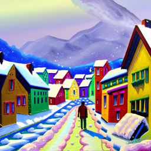
First Example from model with the following prompt an oil painting of a snowy mountain village with number of inference steps are 40 and 256x256
Second Example from model with the following prompt a man wearing a hat with number of inference steps are 40 and 256x256
Third Example from model with the following prompt a rocket ship with number of inference steps are 40 and 256x256
First Example from model with the following prompt an oil painting of a snowy mountain village with number of inference steps are 10 and 64x64
Second Example from model with the following prompt a man wearing a hat with number of inference steps are 10 and 64x64
Third Example from model with the following prompt a rocket ship with number of inference steps are 10 and 64x64
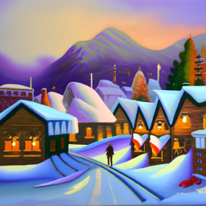
First Example from model with the following prompt an oil painting of a snowy mountain village with number of inference steps are 10 and 256x256
Second Example from model with the following prompt a man wearing a hat with number of inference steps are 10 and 256x256
Third Example from model with the following prompt a rocket ship with number of inference steps are 10 and 256x256
From this we see that as the number of inference steps increase the image seems to be sharper. The seed I am setting is 180.
Part 1: Sampling Loops
1.1 Implementing the Forward Process
The first step I did is to write the forward process where we use the equation that was given to us sepcifically I use the following equation
\[
x_t = \sqrt{\bar{\alpha}_t} x_0 + \sqrt{1 - \bar{\alpha}_t} \epsilon \quad \text{where} \quad \epsilon \sim \mathcal{N}(0, 1)
\]
which is essentially given a clean image (\x_0\) we will get a noisy image (\x_t\) at time step (\t\) by sampling
from a Gaussian noise with mean (\sqrt{\bar{\alpha}_t}) and variance (\sqrt{1 - \bar{\alpha}_t}). We implement the forward(im,t) function and
the result below show the test image at noise level [0, 250, 500, 750]
Original Berkeley Campnile
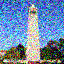
Noisy Campanile image at t = 250
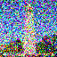
Noisy Campanile image at t = 500
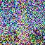
Noisy Campanile image at t = 750
1.2 Classical Denoising
Given now that we have the noisy images we want to try to denoise these images the first thing we can try is to us the Gaussian blur filtering to try to remove the noise the result below
shows the result of applying gaussian blur at each time step [250, 500, 750]
Noisy Campanile image at t = 250
Noisy Campanile image at t = 500
Noisy Campanile image at t = 750
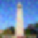
Gaussian Blur Denoising at t = 250
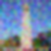
Gaussian Blur Denoising at t = 500
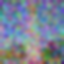
Gaussian Blur Denoising at t = 750
As we can see from this that this is not looking good at all so we will try to use other method instead
1.3 One-Step Denoising
We will use the pretraiend diffusion model to denoise the image we can use this to recover the Gaussian noise from the image the image below show the result of the 3
noisy image at time step [250, 500, 750] and also the one-step denoised for each of the image
Noisy Campanile image at t = 250
Noisy Campanile image at t = 500
Noisy Campanile image at t = 750
One-Step Denoised Campanile at t = 250
One-Step Denoised Campanile at t = 500
One-Step Denoised Campanile at t = 750
Again this look not the best however, it is still better than the gaussian blur earlier that we did now the next section we will do the iterative denoising
1.4 Iterative Denoising
Instead of doing one step denoising we can do a much better job by denoising each step and get the clear image at the end.
To do this we first need to create a list of timesteps that we will call it as stided_timesteps where the first item in the list correspond to the noisiest image
and then the last timesteps is the one that is a clean image so we used the stided_timesteps from T = 990 to T = 0 in steps of 30. Once we do that then for each of
the timestep we use the following formula and we implement the function iterative_denois(image, i_start)
\[
x_t = \frac{\sqrt{\bar{\alpha}_t \beta_t}}{1 - \bar{\alpha}_t} x_0 + \frac{\sqrt{\alpha_t (1 - \bar{\alpha}_t)}}{1 - \bar{\alpha}_t} x_t + v_\sigma
\]
Where:
- \( x_t \) is your image at timestep \( t \)
- \( x_{t'} \) is your noisy image at timestep \( t' \) where \( t' < t \) (less noisy)
- \( \bar{\alpha}_t \) is defined by
alphas_cumprod, as explained above.
- \( \alpha_t = \frac{\bar{\alpha}_t}{\bar{\alpha}_{t'}} \)
- \( \beta_t = 1 - \alpha_t \)
- \( x_0 \) is our current estimate of the clean image using equation 2 just like in section 1.3
- \( v_\sigma \) is random noise, which in the case of DeepFloyd is also predicted.
We started first with i_start = 10 and the images below show the result of the noisy image of 5th loop of denoising and the final predicted clean image using iterative
denoising, predicted clean image using single denoising step annd predicted clean image using gaussing bluring
Noisy Campanile image at t = 136
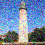
Noisy Campanile image at t = 238
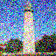
Noisy Campanile image at t = 307
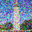
Noisy Campanile image at t = 477
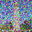
Noisy Campanile image at t = 648
Original Image
Iterative Denoised Campanile
One Step Denoised Campanile
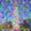
Gaussain Blurred Campanile
1.5 Diffusion Model Sampling
Once we get everything working now we can started to do some sampling image completely from the noise that is we set the i_start to be 0 the images below some sample 5 images
Sample 1
Sample 3
Sample 4
Sample 5
Sample 6
1.6 Classifier-Free Guidance
One thing we note here is that the image generated is not very good so we have that we can do better by applying the classifier free guidance that is
we compute the noise estimage of both a conditional and unconditional and then we denote the final noise as where (\epsilon_{c}) denote the epsilon noised
estimated conditional and (\epsilon_{u}) denote the epsilon noised estimated unconditional
\[
\epsilon = \epsilon_{u} + \gamma (\epsilon_{c} - \epsilon_{u})
\]
We implemented the iterative denoise cfg function and using the scale factor of 7 and show the images of 5 sample the images are below
Sample 1 with CFG
Sample 2 with CFG
Sample 3 with CFG
Sample 4 with CFG
Sample 5 with CFG
Sample 6 with CFG
1.7 Image-to-Image Translation
From the previous part we have that we take a real image and we add noise to it and then denoise but this part we will try to take the original image
noise a little bit and force it back onto the image manifold without any conditioning. We use the iterative_denoise_cfg function using a starting index of
[1, 3, 5,7,10,20] steps and show the results
First example of SDEdit with i_start = 1
First example of SDEdit with i_start = 3
First example of SDEdit with i_start = 5
First example of SDEdit with i_start = 7
First example of SDEdit with i_start = 10
First example of SDEdit with i_start = 20
Campanile
Second example of SDEdit with i_start = 1
Second example of SDEdit with i_start = 3
Second example of SDEdit with i_start = 5
Second example of SDEdit with i_start = 7
Second example of SDEdit with i_start = 10
Second example of SDEdit with i_start = 20
Capybara
Third example of SDEdit with i_start = 1
Third example of SDEdit with i_start = 3
Third example of SDEdit with i_start = 5
Third example of SDEdit with i_start = 7
Third example of SDEdit with i_start = 10
Third example of SDEdit with i_start = 20
Golden Gate
Editing Hand-Drawn and Web Image
Now we will try to use it to the web images and also the Hand-Drawn the images below show the result
Moodeng at i_start = 1
Moodeng at i_start = 3
Moodeng at i_start = 5
Moodeng at i_start = 7
Moodeng at i_start = 10
Moodeng at i_start = 20
Moodeng
House at i_start = 1
House at i_start = 3
House at i_start = 5
House at i_start = 7
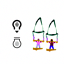
House at i_start = 10
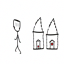
House at i_start = 20
Crab at i_start = 1
Crab at i_start = 3
Crab at i_start = 5
Crab at i_start = 7
Crab at i_start = 10
Crab at i_start = 20
Crab
1.7.2 Inpainting
We then apply this process with the inpaint below show some of the results
Campanile
 First Mask
First Mask
 First Hole to Fill
First Hole to Fill
Campanile Inpainted
Beach Image
Second Mask
Second Hole to Fill
Beach Inpainted
BigBen Image
Third Mask
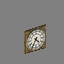
Third Hole to Fill
Beach Inpainted
1.7.3 Text-Conditional Image-to-Image Translation
We show some images below
Rocket Ship at noise level 1
Rocket Ship at noise level 3
Rocket Ship at noise level 5
Rocket Ship at noise level 7
Rocket Ship at noise level 10
Rocket Ship at noise level 20
Campanile
Robot Face at noise level 1
Robot Face at noise level 3
Robot Face at noise level 5
Robot Face at noise level 7
Robot Face at noise level 10
Robot Face at noise level 20
Human Head
Strawberry at noise level 1
Strawberry at noise level 3
Strawberry at noise level 5
Strawberry at noise level 7
Strawberry at noise level 10
Strawberry at noise level 20
Apple
1.8 Visual Anagrams
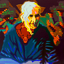
An Oil Painting of an Old Man
An Oil Painting of People around a Campfire
A sleeping cat
A mountain landscape
An oil painting of a snowy mountain village
An oil painting of penguin
1.9 Hybrid Images
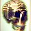
Hybrid Image of a skull and waterfall
Hybrid Image of a tiger and lion
Hybrid Image of a rocket ship and clock tower
Part B: Diffusion Models from Scratch!
1.2 Using the UNet to Train a Denoiser
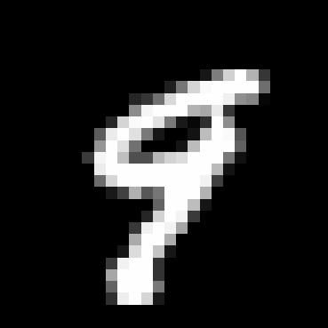
First example of image at sigma level is 0.0
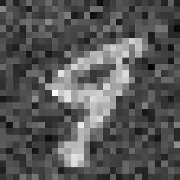
First example of image at sigma level is 0.2
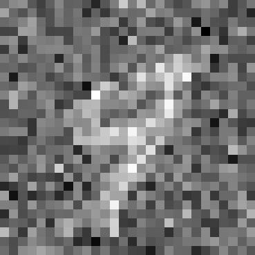
First example of image at sigma level is 0.4
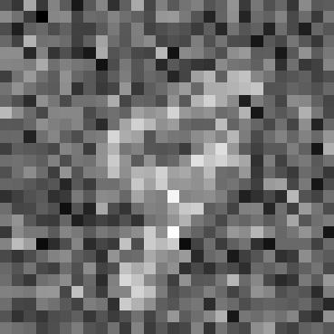
First example of image at sigma level is 0.5
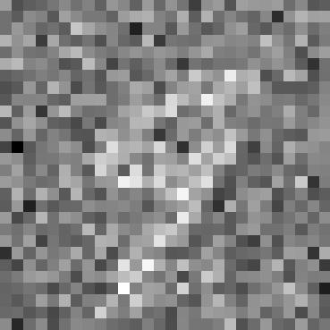
First example of image at sigma level is 0.6
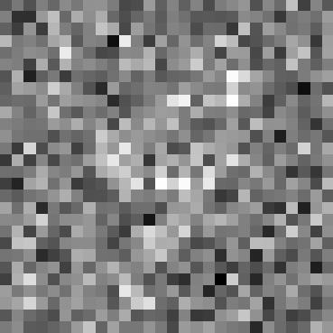
First example of image at sigma level is 0.8
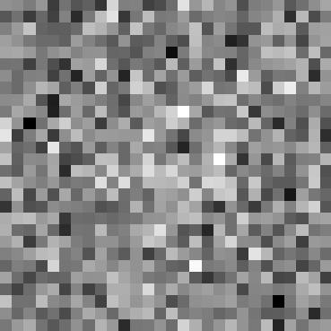
First example of image at sigma level is 1.0
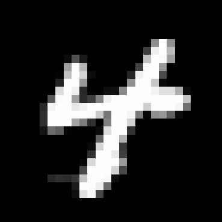
Second example of image at sigma level is 0.0
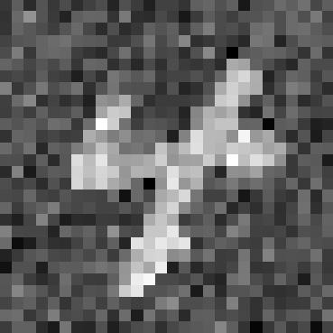
Second example of image at sigma level is 0.2
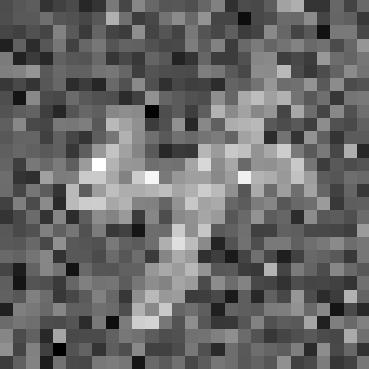
Second example of image at sigma level is 0.4
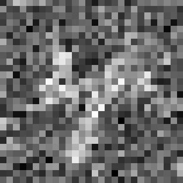
Second example of image at sigma level is 0.5
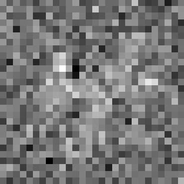
Second example of image at sigma level is 0.6
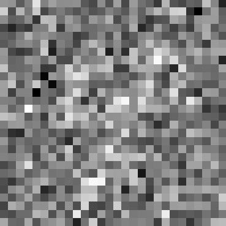
Second example of image at sigma level is 0.8
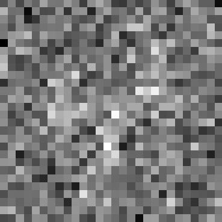
Second example of image at sigma level is 1.0
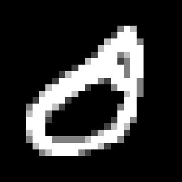
Third example of image at sigma level is 0.0
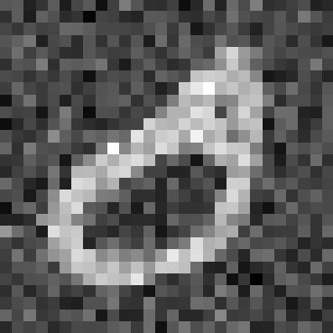
Third example of image at sigma level is 0.2
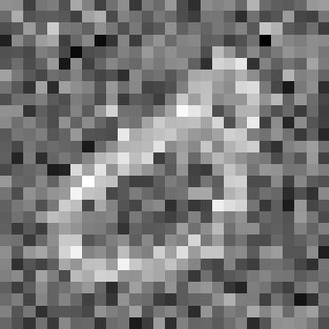
Third example of image at sigma level is 0.4
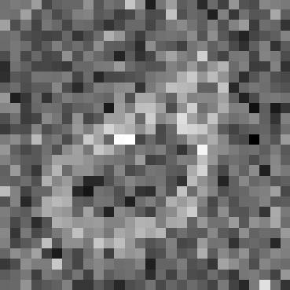
Third example of image at sigma level is 0.5
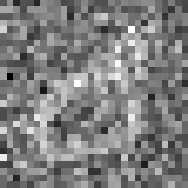
Third example of image at sigma level is 0.6
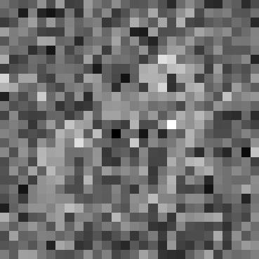
Third example of image at sigma level is 0.8
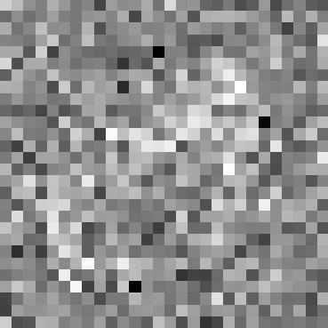
Third example of image at sigma level is 1.0
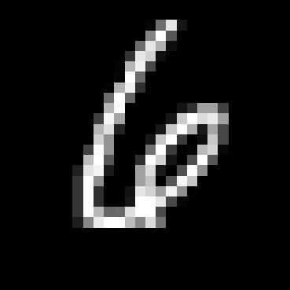
Fourth example of image at sigma level is 0.0
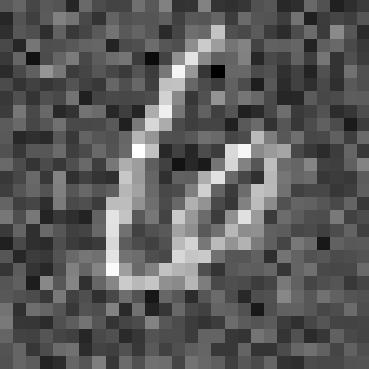
Fourth example of image at sigma level is 0.2
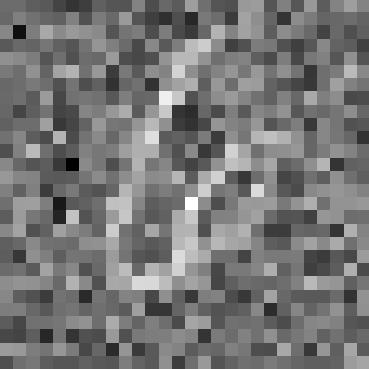
Fourth example of image at sigma level is 0.4
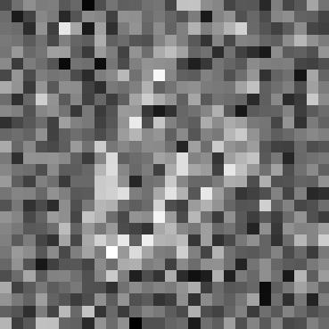
Fourth example of image at sigma level is 0.5
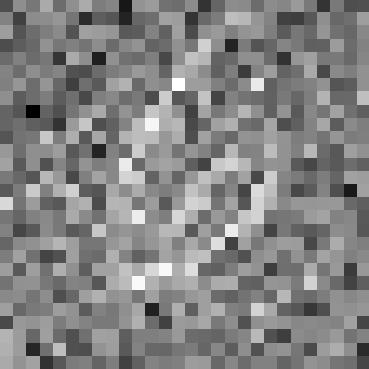
Fourth example of image at sigma level is 0.6
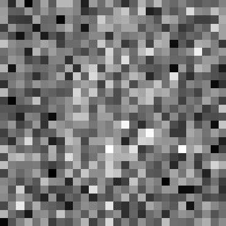
Fourth example of image at sigma level is 0.8
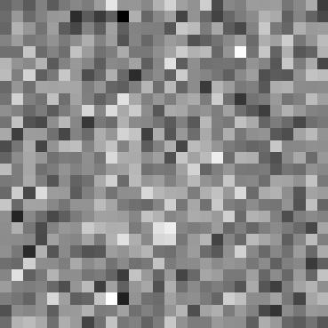
Fourth example of image at sigma level is 1.0
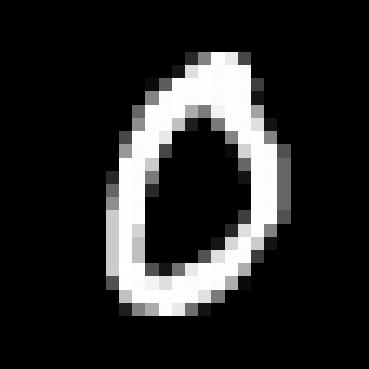
Fifth example of image at sigma level is 0.0
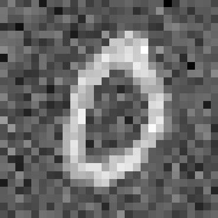
Fifth example of image at sigma level is 0.2
Fifth example of image at sigma level is 0.4
Fifth example of image at sigma level is 0.5
Fifth example of image at sigma level is 0.6
Fifth example of image at sigma level is 0.8
Fifth example of image at sigma level is 1.0
1.2.1 Training
 Epoch 1 test set first example at sigma = 0
Epoch 1 test set first example at sigma = 0
Epoch 1 test set first example at sigma = 0.5
Epoch 1 test set first example output
Epoch 1 test set second example at sigma = 0
Epoch 1 test set second example at sigma = 0.5
Epoch 1 test set second example output
Epoch 1 test set third example at sigma = 0
Epoch 1 test set third example at sigma = 0.5
Epoch 1 test set third example output
Epoch 5 test set first example at sigma = 0
Epoch 5 test set first example at sigma = 0.5
Epoch 5 test set first example output
 Epoch 5 test set second example at sigma = 0
Epoch 5 test set second example at sigma = 0
Epoch 5 test set second example at sigma = 0.5
Epoch 5 test set second example output
 Epoch 5 test set third example at sigma = 0
Epoch 5 test set third example at sigma = 0
Epoch 5 test set third example at sigma = 0.5
Epoch 5 test set third example output
1.2.2 Out-of-Distribution Testing
 Noisy image with sigma = 0.0
Noisy image with sigma = 0.0
Noisy image with sigma = 0.2
Noisy image with sigma = 0.4
Noisy image with sigma = 0.5
Noisy image with sigma = 0.6
Noisy image with sigma = 0.8
Noisy image with sigma = 1.0
Denoised output image with sigma = 0.0
Denoised output image with sigma = 0.2
Denoised output image with sigma = 0.4
Denoised output image with sigma = 0.5
Denoised output image with sigma = 0.6
Denoised output image with sigma = 0.8
Denoised output image with sigma = 1.0
Part 2
2.3 Putting It all together
Epoch 1 digit 0 first sample
Epoch 1 digit 1 first sample
Epoch 1 digit 2 first sample
Epoch 1 digit 3 first sample
Epoch 1 digit 4 first sample
Epoch 1 digit 5 first sample
Epoch 1 digit 6 first sample
Epoch 1 digit 7 first sample
Epoch 1 digit 8 first sample
Epoch 1 digit 9 first sample
Epoch 1 digit 0 second sample
Epoch 1 digit 1 second sample
Epoch 1 digit 2 second sample
Epoch 1 digit 3 second sample
Epoch 1 digit 4 second sample
Epoch 1 digit 5 second sample
Epoch 1 digit 6 secpnd sample
Epoch 1 digit 7 second sample
Epoch 1 digit 8 second sample
Epoch 1 digit 9 second sample
Epoch 1 digit 0 third sample
Epoch 1 digit 1 third sample
Epoch 1 digit 2 third sample
Epoch 1 digit 3 third sample
Epoch 1 digit 4 third sample
Epoch 1 digit 5 third sample
Epoch 1 digit 6 third sample
Epoch 1 digit 7 third sample
Epoch 1 digit 8 third sample
Epoch 1 digit 9 third sample
Epoch 1 digit 0 fourth sample
Epoch 1 digit 1 fourth sample
Epoch 1 digit 2 fourth sample
Epoch 1 digit 3 fourth sample
Epoch 1 digit 4 fourth sample
Epoch 1 digit 5 fourth sample
Epoch 1 digit 6 fourth sample
Epoch 1 digit 7 fourth sample
Epoch 1 digit 8 fourth sample
Epoch 1 digit 9 fourth sample
Epoch 5 digit 0 first sample
Epoch 5 digit 1 first sample
Epoch 5 digit 2 first sample
Epoch 5 digit 3 first sample
Epoch 5 digit 4 first sample
Epoch 5 digit 5 first sample
Epoch 5 digit 6 first sample
Epoch 5 digit 7 first sample
Epoch 5 digit 8 first sample
Epoch 5 digit 9 first sample
Epoch 5 digit 0 second sample
Epoch 5 digit 1 second sample
Epoch 5 digit 2 second sample
Epoch 5 digit 3 second sample
Epoch 5 digit 4 second sample
Epoch 5 digit 5 second sample
Epoch 5 digit 6 second sample
Epoch 5 digit 7 second sample
Epoch 5 digit 8 second sample
Epoch 5 digit 9 second sample
Epoch 5 digit 0 third sample
Epoch 5 digit 1 third sample
Epoch 5 digit 2 third sample
Epoch 5 digit 3 third sample
Epoch 5 digit 4 third sample
Epoch 5 digit 5 third sample
Epoch 5 digit 6 third sample
Epoch 5 digit 7 third sample
Epoch 5 digit 8 third sample
Epoch 5 digit 9 third sample
Epoch 5 digit 0 fourth sample
Epoch 5 digit 1 fourth sample
Epoch 5 digit 2 fourth sample
Epoch 5 digit 3 fourth sample
Epoch 5 digit 4 fourth sample
Epoch 5 digit 5 fourth sample
Epoch 5 digit 6 fourth sample
Epoch 5 digit 7 fourth sample
Epoch 5 digit 8 fourth sample
Epoch 5 digit 9 fourth sample
Epoch 10 digit 0 first sample
Epoch 10 digit 1 first sample
Epoch 10 digit 2 first sample
Epoch 10 digit 3 first sample
Epoch 10 digit 4 first sample
Epoch 10 digit 5 first sample
Epoch 10 digit 6 first sample
Epoch 10 digit 7 first sample
Epoch 10 digit 8 first sample
Epoch 10 digit 9 first sample
Epoch 10 digit 0 second sample
Epoch 10 digit 1 second sample
Epoch 10 digit 2 second sample
Epoch 10 digit 3 second sample
Epoch 10 digit 4 second sample
Epoch 10 digit 5 second sample
Epoch 10 digit 6 second sample
Epoch 10 digit 7 second sample
Epoch 10 digit 8 second sample
Epoch 10 digit 9 second sample
Epoch 10 digit 0 third sample
Epoch 10 digit 1 third sample
Epoch 10 digit 2 third sample
Epoch 10 digit 3 third sample
Epoch 10 digit 4 third sample
Epoch 10 digit 5 third sample
Epoch 10 digit 6 third sample
Epoch 10 digit 7 third sample
Epoch 10 digit 8 third sample
Epoch 10 digit 9 third sample
Epoch 10 digit 0 fourth sample
Epoch 10 digit 1 fourth sample
Epoch 10 digit 2 fourth sample
Epoch 10 digit 3 fourth sample
Epoch 10 digit 4 fourth sample
Epoch 10 digit 5 fourth sample
Epoch 10 digit 6 fourth sample
Epoch 10 digit 7 fourth sample
Epoch 10 digit 8 fourth sample
Epoch 10 digit 9 fourth sample
Epoch 15 digit 0 first sample
Epoch 15 digit 1 first sample
Epoch 15 digit 2 first sample
Epoch 15 digit 3 first sample
Epoch 15 digit 4 first sample
Epoch 15 digit 5 first sample
Epoch 15 digit 6 first sample
Epoch 15 digit 7 first sample
Epoch 15 digit 8 first sample
Epoch 15 digit 9 first sample
Epoch 15 digit 0 second sample
Epoch 15 digit 1 second sample
Epoch 15 digit 2 second sample
Epoch 15 digit 3 second sample
Epoch 15 digit 4 second sample
Epoch 15 digit 5 second sample
Epoch 15 digit 6 second sample
Epoch 15 digit 7 second sample
Epoch 15 digit 8 second sample
Epoch 15 digit 9 second sample
Epoch 15 digit 0 third sample
Epoch 15 digit 1 third sample
Epoch 15 digit 2 third sample
Epoch 15 digit 3 third sample
Epoch 15 digit 4 third sample
Epoch 15 digit 5 third sample
Epoch 15 digit 6 third sample
Epoch 15 digit 7 third sample
Epoch 15 digit 8 third sample
Epoch 15 digit 9 third sample
Epoch 15 digit 0 fourth sample
Epoch 15 digit 1 fourth sample
Epoch 15 digit 2 fourth sample
Epoch 15 digit 3 fourth sample
Epoch 15 digit 4 fourth sample
Epoch 15 digit 5 fourth sample
Epoch 15 digit 6 fourth sample
Epoch 15 digit 7 fourth sample
Epoch 15 digit 8 fourth sample
Epoch 15 digit 9 fourth sample
Epoch 20 digit 0 first sample
Epoch 20 digit 1 first sample
Epoch 20 digit 2 first sample
Epoch 20 digit 3 first sample
Epoch 20 digit 4 first sample
Epoch 20 digit 5 first sample
Epoch 20 digit 6 first sample
Epoch 20 digit 7 first sample
Epoch 20 digit 8 first sample
Epoch 20 digit 9 first sample
Epoch 20 digit 0 second sample
Epoch 20 digit 1 second sample
Epoch 20 digit 2 second sample
Epoch 20 digit 3 second sample
Epoch 20 digit 4 second sample
Epoch 20 digit 5 second sample
Epoch 20 digit 6 second sample
Epoch 20 digit 7 second sample
Epoch 20 digit 8 second sample
Epoch 20 digit 9 second sample
Epoch 20 digit 0 third sample
Epoch 20 digit 1 third sample
Epoch 20 digit 2 third sample
Epoch 20 digit 3 third sample
Epoch 20 digit 4 third sample
Epoch 20 digit 5 third sample
Epoch 20 digit 6 third sample
Epoch 20 digit 7 third sample
Epoch 20 digit 8 third sample
Epoch 20 digit 9 third sample
Epoch 20 digit 0 fourth sample
Epoch 20 digit 1 fourth sample
Epoch 20 digit 2 fourth sample
Epoch 20 digit 3 fourth sample
Epoch 20 digit 4 fourth sample
Epoch 20 digit 5 fourth sample
Epoch 20 digit 6 fourth sample
Epoch 20 digit 7 fourth sample
Epoch 20 digit 8 fourth sample
Epoch 20 digit 9 fourth sample
Final Epoch Example guidance scale 0
Final Epoch Example guidance scale 5
Final Epoch Example guidance scale 10